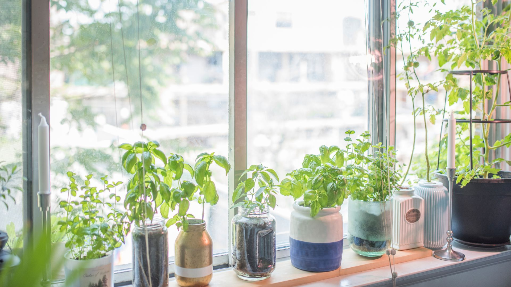

Gardening Options Year-Round
While many people only consider planting in the spring, there are actually a number of vegetables that can be planted in late summer or early fall for a fall harvest as well as certain plants that can be grown indoors over the winter. Personally, I have had success growing pumpkins in the fall, and I am planning to try growing lettuce indoors over the winter. Indoor herbs are also a good option for winter growing. Gardening year round is possible with a bit of planning and research. Its a great hobby to have, and it is rewarding to be able to grow your own food and see something green even in the cold winter months.
Best Fall Veggies to Plant
- pumpkins
- broccoli
- cabbage
- carrots
- cauliflower
- lettuce
- radishes
- spinach
Winter Gardening
While outdoor gardening is not really an option in the winter in colder climates, there are still a number of options for indoor gardening. Herbs are a great option for indoor gardening, as they do not require a lot of space and can be grown on a sunny windowsill. Lettuce and other leafy greens can also be grown indoors with the right setup. There are a number of kits available online that provide everything you need to get started with indoor gardening.
For more information on fall and winter gardening, check out these resources:
- href="https://www.almanac.com/content/vegetable-gardening-fall" target="_blank">GDA
- ="https://www.thespruce.com/winter-gardening-indoors-1402771" target="_blank">GDA